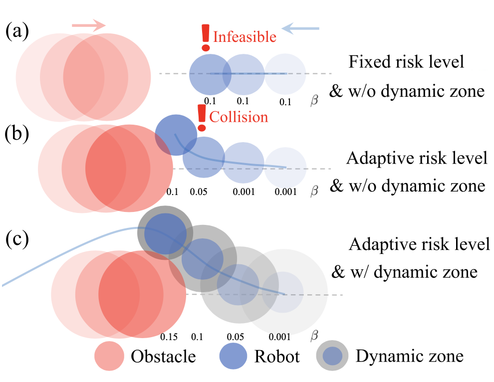

Motivation

(a) A fixed risk level is not flexible enough: A low risk tolerance enhances safety but can render the optimization infeasible,
whereas a high risk tolerance improves feasibility at the expense of safety.
(b) In highly dynamic scenarios, where obstacles move unpredictably and rapidly, the robot requires sufficient time and space to respond and adjust its
risk level.
(c) Our method dynamically adjusts the risk level within an extended risk range to maintain feasibility while ensuring user-defined probabilistic safety. The robot proactively modifies its trajectory before approaching obstacles, but only when necessary, thus avoiding unnecessary conservatism.